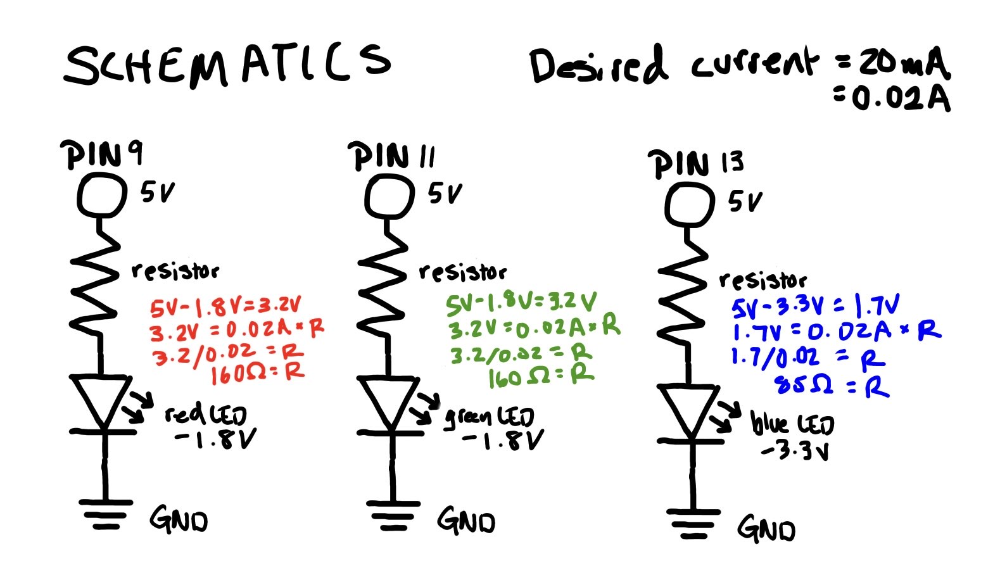
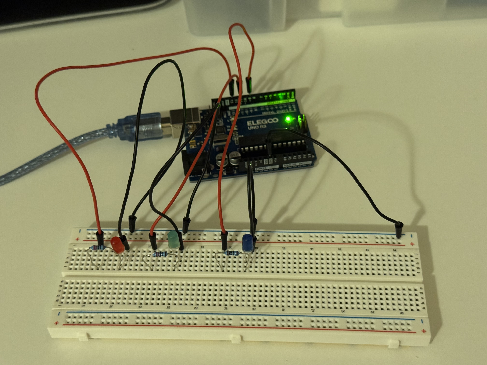
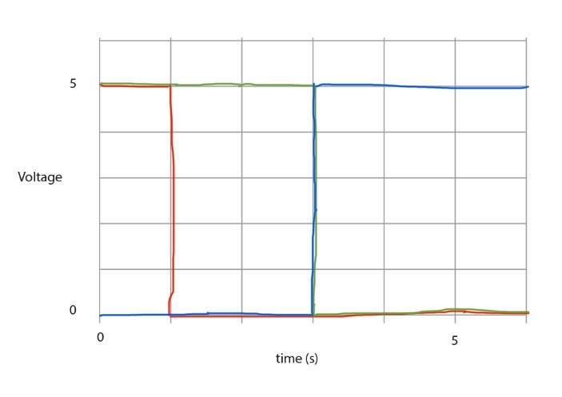

Circuit and Schematics


Code Snippet
// the setup function runs once when you press reset or power the board
void setup() {
// initialize digital pin LED_BUILTIN as an output.
pinMode(13, OUTPUT); // initializing pin 13 (red LED) as an output
pinMode(11, OUTPUT); // initializing pin 11 (green LED) as an output
pinMode(9, OUTPUT); // initializing pin 9 (blue LED) as an output
// the loop function runs over and over again forever
void loop() {
digitalWrite(13, HIGH); // turn red LED on (HIGH (5) voltage level)
digitalWrite(11, HIGH); // turn the green LED on
delay(1000); // wait for 1 second for the red LED
digitalWrite(13, LOW); // turn red LED off (LOW (0) voltage level)
delay(3000); // wait for 3 seconds for the green LED
digitalWrite(11, LOW); // turn green LED off
digitalWrite(9, HIGH); // turn blue LED on
delay(5000); // wait for 5 seconds for the blue LED
digitalWrite(9, LOW); // turn blue LED off
delay(1000); // wait for 1 second
Operation

Questions
Draw a graph where the X axis is time and the Y axis is voltage across the LEDs. Draw a line for each of your 3 LEDs.
The red and green LED blink on, the red LED turns off after 1 second, the green LED stays on for 3 seconds before turning off, then the blue LED blinks on for 5 seconds and turns off.
How many LEDs could you blink indepdently with your Arduino? How much current would that draw?
You could blink 20 LEDs indepdently with the Arduino (pins 0-13 and A0-A5). The amount of current would depend on the types of LEDs and resistors. If you used all red LEDs, it would draw 290 mA total. With a 220 ohm resistor, red LEDs would draw 14.5 mA each and 14.5*20=290.
How fast do you need to blink your LEDs until you no longer can tell that they are blinking?
LEDs need to blink more than 0.01 seconds before you can no longer tell they are blinking.
Did you use AI tools in completing this assignment?
No.